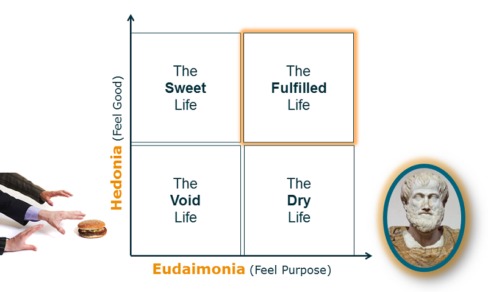

This site is for making you realise that you deserve to be happy ✌ and to show how you can make it!🦁
In general, happiness is understood as the positive emotions we have in regards to the pleasurable activities we take part in through our daily lives. Pleasure, comfort, gratitude, hope, and inspiration are examples of positive emotions that increase our happiness.
Happiness, in the context of mental or emotional states, is positive or pleasant emotions ranging from contentment to intense joy. Other forms include life satisfaction, well-being, subjective well-being, flourishing and eudaimonia.
Since the 1960s, happiness research has been conducted in a wide variety of scientific disciplines, including gerontology, social psychology and positive psychology, clinical and medical research and happiness economics.
"Happiness" is subject to debate on usage and meaning, and on possible differences in understanding by culture.
The word is mostly used in relation to two factors:
♣ The current experience of the feeling of an emotion (affect) such as pleasure or joy, or of a more general sense of 'emotional condition as a whole'.For instance Daniel Kahneman has defined happiness as "what I experience here and now". This usage is prevalent in dictionary definitions of happiness.
♣ Appraisal of life satisfaction, such as of quality of life. For instance Ruut Veenhoven has defined happiness as "overall appreciation of one's life as-a-whole". Kahneman has said that this is more important to people than current experience.
💞 Have you ever wondered what happiness means to you? 💞
The joy is something that people seek to find, yet what defines happiness can vary from one person to the next. So what brings you joy or fulfillment is probably not the same as another human being because of our values, concepts of life and also experiences!
In the previous pages you will find out, after some information, some tips and tricks that will improve your lifestyle.
Types of Happiness:
There are many different ways of thinking about happiness. For example, the ancient Greek philosopher Aristotle made a distinction between two different kinds of happiness:┌ hedonia and ┌ eudaimonia.
♢ Hedonia: Hedonic happiness is derived from pleasure. It is most often associated with doing what feels good, self-care, fulfilling desires, experiencing enjoyment, and feeling a sense of satisfaction.
♢ Eudaimonia: This type of happiness is derived from seeking virtue and meaning. Important components of eudaimonic well-being including feeling that your life has meaning, value, and purpose. It is associated more with fulfilling responsibilities, investing in long-term goals, concern for the welfare of other people, and living up to personal ideals.
Hedonia and eudemonia are more commonly known today in psychology as pleasure and meaning, respectively. More recently, psychologists have suggested the addition of the third component that relates to engagement 💍. These are feelings of commitment and participation in different areas of life.

Here is a map of a Customer Happiness Center in U.A.E.
🌍 It's basically a happiness portal to measure happiness of Dubai's visitors and residents.
Did you ever ask yourself what is it doing?
This center promote communication with customers and provide them with the necessary services for individuals or institutions from the government or private sector. Supervising the preparation and organization of polls measuring the level of satisfaction with the services provided to the public and dealers.
If you want to make a call, here is the phone number of the center: +971 80011111.